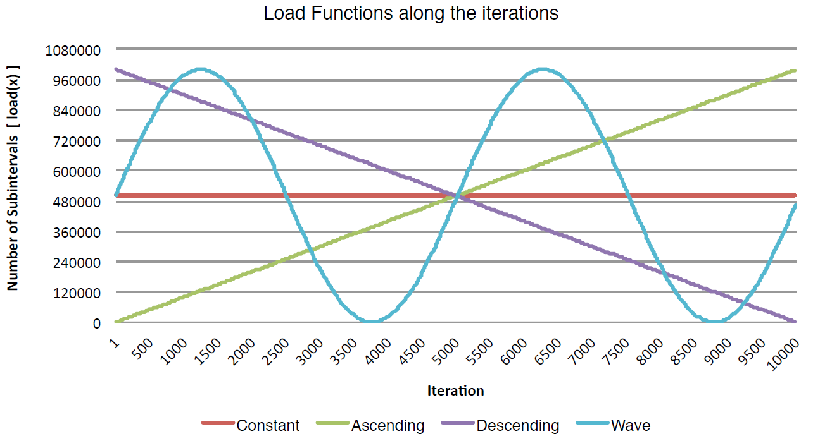

Aiming to analyse the parallel application on different loads, four patterns were developed named: Constant, Ascending, Descending and Wave. Table 1 and Figure 1 show the equation of each pattern and the template used in the tests. The iterations in this figure means the number of functions that are generated, resulting in the same number of numerical integrations. Additionally, the polynomial selected for tests does not matter in this case because of we are putting attention in the load variations and not in the result of the numerical integration itself.
Figure 2 shows a graphical representation of each pattern. The
x axis in the graph of Figure 2 expresses the number of functions (one function per iteration) that are being tested, while the
y axis informs the respective load. The load means the number of subintervals between limits
a and
b, which, in this experiment, are 1 and 10 respectively. The larger the number of intervals, the greater the computational load to generate the numerical integration of the function. For sake of simplicity, the same function is employed in the tests, but varying the number of subintervals for the integration.

Figure 2: Graphical vision of the load patterns for application testing.